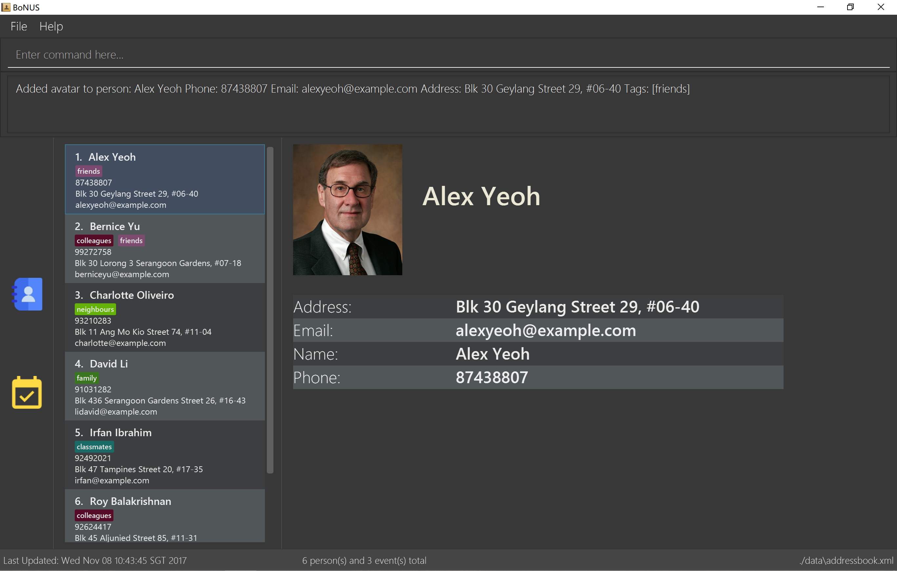

By: CS2103T T09-B3 Team Since: Sep 2017 Licence: MIT
- 1. Introduction
- 2. Quick Start
- 3. Components
- 4. Key features
- 5. Commands
- 5.1. Viewing help :
(h)help - 5.2. Adding a person :
(a)add - 5.3. Adding an event :
(aE)addE - 5.4. Listing all persons/events :
(l)list - 5.5. Listing all events :
(lE)listE - 5.6. Editing a person :
(e)edit - 5.7. Editing an event :
(eE)editE - 5.8. Locating persons/events by any property :
(f)find - 5.9. Locating persons by their tag :
(ft)findtag - 5.10. Deleting a person :
(d)delete - 5.11. Deleting an event :
(dE)deleteE - 5.12. Selecting a person:
(s)select - 5.13. Listing entered commands :
(his)history - 5.14. Undoing previous command :
(u)undo - 5.15. Redoing the previously undone command :
(r)redo - 5.16. Clearing all entries :
(c)clear - 5.17. Importing data :
(i)import - 5.18. Exporting data :
(p)export - 5.19. Advance setting :
(cfg)config - 5.20. Exiting the program :
(x)exit - 5.21. Saving the data
- 5.1. Viewing help :
- 6. FAQ
- 7. Command Summary
1. Introduction
As the name implies, BoNUS helps you better(B) organize(o) your NUS life.
-
BoNUS is a desktop personal organizer application dedicated to NUS students to carry out various tasks such as storing contacts, scheduling for upcoming events, timetable planning as well as a calendar to better organise their campus life.
-
Apart from storing important information such as name, email, address and phone number. you are given infinite freedom to customize your own fields as you deem fit.
-
BoNUS is convenient, fast, secured, integrated, solely with the motivation of giving you a bonus for your student life in NUS.
-
BoNUS is oriented for typist user (most operations should be done using keyboard rather than mouse).
1.1. Purpose
This user guide aims to provide potential users with a comprehensive step-by-step guide on how to better utilise BoNUS to make their NUS life a more organised one.
2. Quick Start
-
Ensure you have Java version
1.8.0_60or later installed in your Computer.Having any Java 8 version is not enough.
This app will not work with earlier versions of Java 8. -
Download the latest
bonus.jarrelease from here. -
Create a folder you want to use as home folder for BoNUS and copy the
jaryou have downloaded there. -
Double-click the file to start the app. The GUI should appear in a few seconds.
Figure 2.1 : User Interface Demo
-
Type the command in the command box and press Enter to execute it.
e.g. typinghelpand pressing Enter will open the help window. -
Some example commands you can try:
-
list: lists all contacts -
addn/John Doe p/98765432 e/johnd@example.com a/John street, block 123, #01-01: adds a contact namedJohn Doeto the Address Book. -
delete3: deletes the 3rd contact shown in the current list -
exit: exits the app
-
-
Refer to the commands section below for details of each command.
3. Components
BoNUS mainly consists on three components: contacts, events and calendar. They work independently and each is
considered as a collection of one kind of data items.
| You can use the sidebar on the left-hand side of the application interface to switch between different components. |
Figure 3.1 : Sidebar for Switching between Different Components
They are described in details as follows:
3.1. Contacts
You can store personal information of your contacts (friends, classmates, professors, etc.) in BoNUS.
-
By default, you can store and update their name, phone number, email address and mailing address. Refer to the
addandeditcommand in the section below for more information. -
You can store other information of your contacts by adding customize properties. Refer to the
config add-propertycommand in the section below for more information. -
You can group your contacts by adding one or multiple tags to them. Contacts with the same tag will be classified under the same group. Tag can be displayed in the color specified by
config --set-tag-colorcommand.
3.2. Events
You can store your upcoming events (meeting with professor tomorrow, assignment deadline, lecture/tutorial time slot, etc.) in BoNUS.
-
By default, you can store and update their title, interval (starting time and end time), venue and description. Refer to the
addEandeditEcommand in the section below for more information. -
Similar to contacts, you can add customize properties to events as well.
-
Similar to contacts, you can add tags to events as well.
-
If you have set starting and/or end time for an event, it will be reflected accordingly on the calendar component.
-
You can set notification at specific time before an event starts (when you should arrive at the venue before a meeting begins) or at specific time before an event ends (when you need to finalize your assignment and submit it to your professor).
-
You can link one or more contacts to an event (if they are going to attend the event together with you).
3.3. Calendar
(Coming in v2.0)
Calender provides a more convenient interface for you to view your upcoming events. All events are displayed based on their time interval. Events whose time intervals are not specified will not be displayed here.
-
You can choose the style to display the upcoming events (weekly/monthly/yearly view).
-
You can add/update/delete events here, but the actual operation will be handled by the events component.
4. Key features
4.1. Convenient
BoNUS can provide ultimate convenience and save much time in your daily life.
-
Import contacts from iCloud, Google+, Facebook, etc.
-
Import events from Google Calendar, Outlook Calendar, etc.
-
Export data (contacts and events) to
.xmlfile (default storage format for BoNUS), Excel Worksheet, etc. -
Sync between all your devices.
-
(Exclusive) automatically generate your school schedule by simply entering your timetable URL from NUSMods.
4.2. Fast
As long as the number of records stored is less than 50,000 and the size of the storage file is smaller than 20MB, BoNUS is expected to
-
Start the application in 5 seconds.
-
Return the result of all commands available with human-invisible delay.
-
Update things displayed on the GUI (graphic user interface) smoothly.
4.3. Secured
The BoNUS developers understand our users will store personal data in the application. We value privacy and security a lot.
-
All data saved to the storage file will be encrypted using the state-of-the-art encryption scheme (AES-256).
-
You will be prompted to enter their password whenever they open the application (if you has decided to lock your application the last time before you exited).
-
You can set up 2FA (two-factor authentication) to fulfill extra security requirement(s).
5. Commands
The listing below shows a summary of all commands currently available to users and how to use them.
Command Format
-
Words in parentheses represent the command shortcut e.g. in
(a)add n/NAME,ais the shorthand-equivalent notation for theaddcommand. -
Words in
UPPER_CASEare the parameters to be supplied by the user e.g. inadd n/NAME,NAMEis a parameter which can be used asadd n/John Doe. -
Items in square brackets are optional e.g
n/NAME [t/TAG]can be used asn/John Doe t/friendor asn/John Doe. -
Items with
… after them can be used multiple times including zero times e.g.[t/TAG]…can be used ast/friend,t/friend t/familyetc. -
Parameters can be typed in any order e.g. if the command specifies
n/NAME p/PHONE_NUMBER,p/PHONE_NUMBER n/NAMEis also acceptable.
Command in different components
-
Most command can be applied to either a person or an event, whose result will depend on the context e.g.
addwill add a person if the user is currently in the contacts component, otherwiseaddEwill add a new event. -
All commands entered in the calendar component will actually be handled by either contacts component or events component.
5.1. Viewing help : (h)help
Format: (h)help (or press F1 on the keyboard)
5.2. Adding a person : (a)add
Adds a person to the application.
Format: (a)add n/NAME p/PHONE_NUMBER e/EMAIL a/ADDRESS [t/TAG]…
| A person can have any number of tags (including 0). |
Examples:
-
add n/John Doe p/98765432 e/johnd@example.com a/John street, block 123, #01-01 -
add n/Betsy Crowe t/friend e/betsycrowe@example.com a/Newgate Prison p/1234567 t/criminal
In a similar format, you can also add customize properties when adding a new person, as long as you have used config
--add-property command to define that property before.
|
Example:
First, add a birthday property with the short name b
-
config --add-property s/b f/birthday
Then, you can set the value of birthday property when you add a new person (see b/12091191 below)
-
add n/Chris Lee p/98765432 e/johnd@example.com a/23 Chinatown b/12091991 t/friends
5.3. Adding an event : (aE)addE
Adds an event to the application.
Format: (aE)addE n/NAME dt/DATE_TIME a/EMAIL a/ADDRESS
Examples:
-
addE n/Does Birthday dt/25122015 20:30 a/12 Kent Ridge Drive -
addE n/Betsy Birthday dt/25122016 21:30 a/23 Marina Road
|
5.4. Listing all persons/events : (l)list
Shows a list of all persons in the application.
Format: (l)list
Example:
-
list
| Contacts will be sorted by their names (increment). |
5.5. Listing all events : (lE)listE
Shows a list of all events in the application.
Format: (lE)listE
Example:
-
listE
| Events will be sorted by date/time (increment). |
5.6. Editing a person : (e)edit
Edits an existing person in the application.
Format: (e)edit INDEX [n/NAME] [p/PHONE] [e/EMAIL] [a/ADDRESS] [t/TAG]…
Examples:
-
edit 1 p/91234567 e/johndoe@example.com
Edits the phone number and email address of the 1st person to be91234567andjohndoe@example.comrespectively. -
edit 2 n/Betsy Crower t/
Edits the name of the 2nd person to beBetsy Crowerand clears all existing tags.
5.7. Editing an event : (eE)editE
Edits an existing event in the application.
Format: (eE)editE INDEX [n/NAME] [dt/DATE_TIME] [a/ADDRESS]
Examples:
-
editE 1 dt/18052013 03:30
Edits the date/time the 1st event to be18052013 03:30. -
editE 2 n/Lunch with Betsy
Edits the name of the 2nd event to beLunch with Betsy.
5.8. Locating persons/events by any property : (f)find
(AND and OR search coming in v2.0)
Finds persons/events whose corresponding field(s) contain any of the given keywords.
Format: (f)find KEYWORD [MORE_KEYWORDS] [p/KEYWORD [MORE_KEYWORDS]]…
Examples:
-
find John
ReturnsjohnandJohn Doe -
find Betsy Tim John
Returns any person having namesBetsy,Tim, orJohn
5.9. Locating persons by their tag : (ft)findtag
Finds persons whose corresponding tags contain any of the given keywords.
Format: (ft)findtag KEYWORD [MORE_KEYWORDS]…
Examples:
-
findtag family
Returns any person that contains afamilytag -
findtag family colleagues
Returns any person that contains the tagsfamilyandcolleagues
5.10. Deleting a person : (d)delete
Deletes the specified person from the application.
Format: (d)delete INDEX
Examples:
-
list
delete 2
Deletes the 2nd person in the address book. -
find Betsy
delete 1
Deletes the 1st person in the results of thefindcommand.
5.11. Deleting an event : (dE)deleteE
Deletes the specified event from the application.
Format: (dE)deleteE INDEX
Examples:
-
list
deleteE 2
Deletes the 2nd event in the address book.
5.12. Selecting a person: (s)select
Selects a person (identified by the index number used in the last listing) to view the details of that person.
Format: (s)select INDEX
Examples:
-
list
select 2
Selects the 2nd person in the address book. -
find Betsy
select 1
Selects the 1st person in the results of thefindcommand.
5.13. Listing entered commands : (his)history
Lists all the commands that you have entered in reverse chronological order.
Format: (his)history
Example:
-
history
|
Pressing the ↑ and ↓ arrows will display the previous and next input respectively in the command box. |
5.14. Undoing previous command : (u)undo
Restores the application to the state before the previous undoable command was executed.
Format: (u)undo
|
Undoable commands: those commands that modify the application’s content ( |
Examples:
-
delete 1
list
undo(reverses thedelete 1command) -
select 1
list
undo
Theundocommand fails as there are no undoable commands executed previously. -
delete 1
clear
undo(reverses theclearcommand)
undo(reverses thedelete 1command)
| You can view what command you have undone from the user feedback message. |
5.15. Redoing the previously undone command : (r)redo
Reverses the most recent undo command.
Format: (r)redo
Examples:
-
delete 1
undo(reverses thedelete 1command)
redo(reapplies thedelete 1command) -
delete 1
redo
Theredocommand fails as there are noundocommands executed previously. -
delete 1
clear
undo(reverses theclearcommand)
undo(reverses thedelete 1command)
redo(reapplies thedelete 1command)
redo(reapplies theclearcommand)
| You can view what command you have redone from the user feedback message. |
5.16. Clearing all entries : (c)clear
Clears all entries from the current component (either contacts or events).
Format: (c)clear
Examples:
-
clear -
clear --all
|
Use |
5.17. Importing data : (i)import
5.17.1. From .xml format
Imports the data in an external XML file, including data from all three components: Contacts, Events and Calendar,
into the current address book of BoNUS.
Format: (i)import FILEPATH
|
The default data format is |
Examples:
-
For
Windowsusers:
import C:\Users\John Doe\Documents\bonus.xml -
For
macOSandLinuxusers:
import /Users/John Doe/Documents/bonus.xml
|
For |
5.17.2. From .bo format
(Coming in v2.0)
Imports the data in an external BoNUS script file (which ends with .bo), including data from all three components:
Contacts, Events and Calendar, into the application.
Format: (i)import --script FILEPATH
Examples:
-
For
Windowsusers:
import C:\Users\John Doe\Documents\bonus.bo -
For
macOSandLinuxusers:
import /Users/John Doe/Documents/bonus.bo
|
For |
5.17.3. From NUSMods URL
(Exclusive feature for NUS students)
The BoNUS team understands that NUSMods has become an indispensable school timetable builder
for almost all students at NUS. Thus, you are definitely allowed to import your timetable from NUSMods to the BoNUS
application.
Format: (i)import --nusmods YOUR_NUSMODS_URL
Example:
-
import --nusmods https://nusmods.com/timetable/2017-2018/sem1?CS2103T[TUT]=C01
5.18. Exporting data : (p)export
5.18.1. To .xml format
Exports the current data in the application, including data from all three components: Contacts, Events and
Calendar, to an external location.
Format: (p)export FILEPATH
Examples:
-
For
Windowsusers:
export C:\Users\John Doe\Documents\bonus.xml -
For
macOSandLinuxusers:
export /Users/John Doe/Documents/bonus.xml
|
For |
5.18.2. To Microsoft ExcelTM Worksheet
(Coming in v2.0)
Exports the current data in the application to an external file of Microsoft ExcelTM format.
Format: (p)export --excel FILEPATH
Examples:
-
For
Windowsusers:
export --excel C:\Users\John Doe\Documents\bonus.xls -
For
macOSandLinuxusers:
export --excel /Users/John Doe/Documents/bonus.xls
|
For |
5.19. Advance setting : (cfg)config
Changes the configuration of the application or applies some advance settings to the data. Make sure you know what you are doing before using any of the following commands. These commands are intended for advance users.
5.19.1. Adding a customize property : (cfg)config --add-property
Adds a new customize property field available to all persons or events.
Format: (cfg)config --add-property s/SHORT_NAME f/FULL_NAME [m/MESSAGE r/REGULAR_EXPRESSION]
Example:
-
config --add-property s/ag f/age -
config --add-property s/b f/birthday m/Birthday should be in the format of DD/MM/YYYY r/[^\s].*
|
5.19.2. Setting the tag color : (cfg)config --set-tag-color
(Tag feature for events coming in v2.0)
Sets the displayed color of a certain tag (for persons/events).
Format: (cfg)config --set-tag-color TAG_NAME COLOR
Example:
-
config --set-tag-color friends red
|
If you enter an invalid color name, the background for that tag will be set to transparent temporarily. You can use this again to set it to a legal color. |
5.21. Saving the data
-
Address book data are saved in the hard disk automatically after any command that changes the data.
-
These commands are also called undoable commands.
-
There is no need to save manually.
6. FAQ
Q: How do I transfer my data to another Computer?
A: Install the app in the other computer and overwrite the empty data file it creates with the file that contains the
data of your previous Address Book folder.
7. Command Summary
-
Add :
(a)add n/NAME p/PHONE_NUMBER e/EMAIL a/ADDRESS [t/TAG]…
e.g.add n/James Ho p/22224444 e/jamesho@example.com a/123, Clementi Rd, 1234665 t/friend t/colleague -
Add event :
(aE)addE n/NAME dt/DATE_TIME a/ADDRESS
e.g.addE n/James birthday dt/18022017 13:30 a/123, Clementi Rd, 1234665 -
Clear :
(c)clear -
Delete :
(d)delete INDEX
e.g.delete 3 -
Delete event :
(dE)deleteE INDEX
e.g.deleteE 3 -
Edit :
(e)edit INDEX [n/NAME] [p/PHONE_NUMBER] [e/EMAIL] [a/ADDRESS] [t/TAG]…
e.g.edit 2 n/James Lee e/jameslee@example.com -
Edit event :
(eE)editE INDEX [n/NAME] [dt/DATE_TIME] [a/ADDRESS]
e.g.editE 2 n/Lees Day -
Find :
(f)find KEYWORD [MORE_KEYWORDS]
e.g.find James Jake -
List :
(l)list -
List event :
(lE)listE -
Help :
(h)help -
Select :
(s)select INDEX
e.g.select 2 -
History :
(i)history -
Undo :
(u)undo -
Redo :
(r)redo -
Exit :
(x)exit -
Import :
(i) From.xmlfile:import FILEPATH
eg. ForWindowsusers:import C:\Users\John Doe\Documents\bonus.xml
eg. FormacOSandLinuxusers:import /Users/John Doe/Documents/bonus.xml
(ii) From script file:import --script FILEPATH
eg. ForWindowsusers:import C:\Users\John Doe\Documents\bonus.bo
eg. FormacOSandLinuxusers:import /Users/John Doe/Documents/bonus.bo
(iii) From NUSMods timetable:import --nusmods URL
eg.import --nusmods https://nusmods.com/timetable/2017-2018/sem1?CS2103T[TUT]=C01 -
Export :
(p)export [--excel] FILEPATH
eg. ForWindowsusers:export C:\Users\John Doe\Documents\bonus.xml
eg. FormacOSandLinuxusers:export /Users/John Doe/Documents/bonus.xml -
Config :
(i) Add customize property(cfg)config --add-property
eg.config --add-property s/b f/birthday
(ii) Change tag color(cfg)config --set-tag-color
eg.config --set-tag-color friends blue